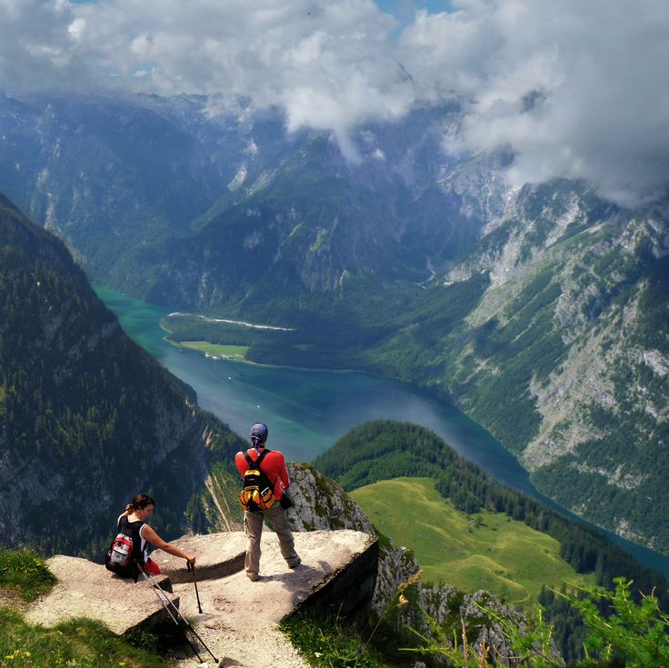

Kısaca Ben
16 Temmuz 2007 doğumluyum. İzmir’de doğup büyüdüm. Eğitim hayatıma 75. Yıl İlk ve Ortaokulu’nda başladım, liseyi Şehit Halil Kantarcı Proje İmam Hatip Lisesi’nde okudum. Şu anda Sakarya Üniversitesi Bilgisayar Mühendisliği Bölümü 1. sınıf öğrencisiyim.
Hobilerim ve İlgi Alanlarım
Müzik
müzik aletlerini severim, o yüzden genelde instrumental müzik dinlerim. profesyonel olmasa da bağlama çalıyorum.
Doğa ve Piknik
Doğayı ve yeşili çok severim. Hava güzelse sık sık ailecek pikniğe gieriz, ya hep gittiğimiz yerlere ya da yeni göl kenarlarına.
Maket Yapımı

Kartondan ve kâğıttan maketler yapmayı severim. çocukken gitar ve televizyon ve cami maketleri yapmıştım.
Sevdiğim İnsanlarla Vakit Geçirmek
Hayatta en sevdiğim şey, en sevdiğim insanlarla vakit geçirdiğim anlardır.